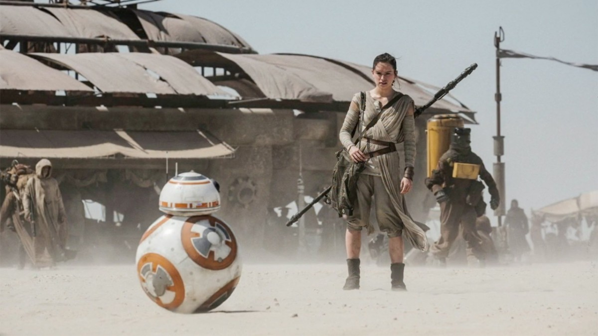
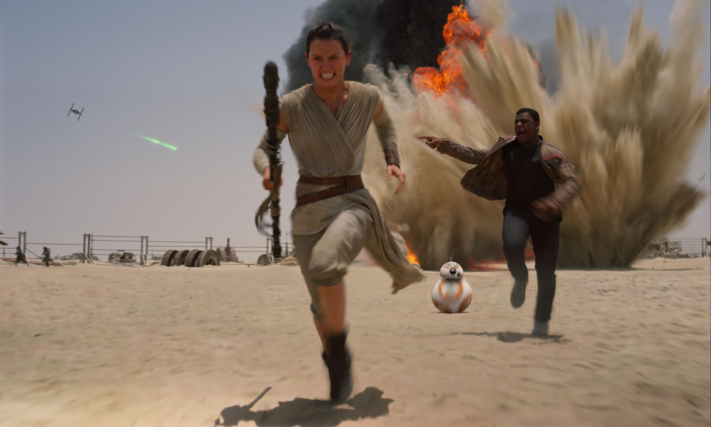
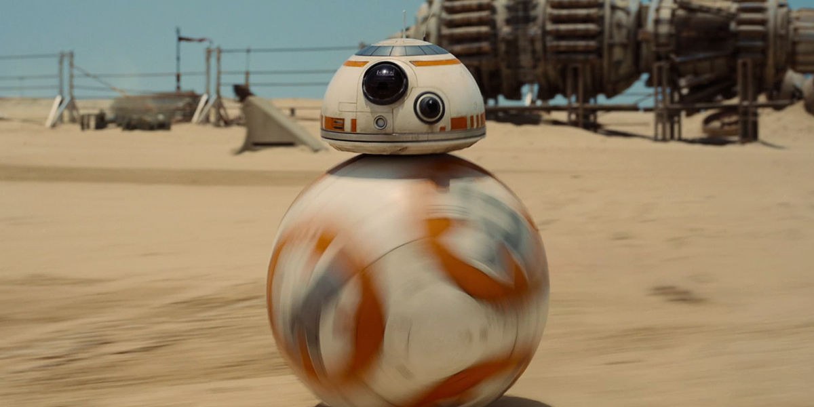
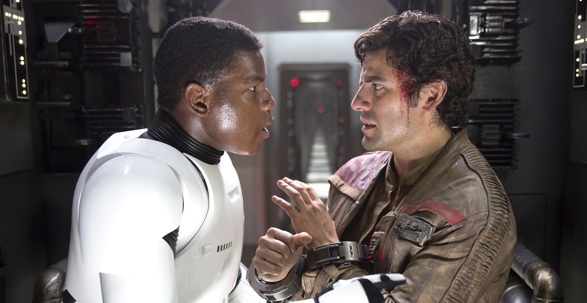

Noisy brute. Why don't we just go into light-speed? We can't? How would you know the hyperdrive is deactivated? The city's central computer told you? Artoo-Detoo, you know better than to trust a strange computer. Ouch! Pay attention to what you're doing!
Well, if there's a bright center to the universe, you're on the planet that it's farthest from. I see, sir. Uh, you can call me Luke. I see, sir Luke. Just Luke. And I am See-Threepio, human-cyborg relations, and this is my counterpart, Artoo-Detoo. Hello. You got a lot of carbon scoring here. It looks like you boys have seen a lot of action. With all we've been through, sometimes I'm amazed we're in as good condition as we are, what with the Rebellion and all. You know of the Rebellion against the Empire? That's how we came to be in your service, if you take my meaning, sir.
All flight trooper, man your stations. All flight troops, man your stations. So...you got your reward and you're just leaving then? That's right, yeah! I got some old debts I've got to pay off with this stuff. Even if I didn't, you don't think I'd be fool enough to stick around here, do you? Why don't you come with us? You're pretty good in a fight. I could use you. Come on! Why don't you take a look around? You know what's about to happen, what they're up against. They could use a good pilot like you. You're turning your back on them.
Well, wait. This is interesting. Lando. Lando system? Lando's not a system, he's a man. Lando Calrissian. He's a card player, gambler, scoundrel. You'd like him. Thanks.
What do you want? Well, it's Princess Leia, sir. She's been trying to get you on the communicator. I turned it off. I don't want to talk to her. Oh. Well, Princess Leia is wondering about Master Luke. He hasn't come back yet. She doesn't know where he is. I don't know where he is. Nobody knows where he is. What do you mean, nobody knows? Well, uh, you see... Deck Officer. Deck Officer!
Well, he seems very friendly. Yes...very friendly. What are you doing here? Ahh...repairs. I thought you could help me out. What have you done to my ship? Your ship? Hey, remember, you lost her to me fair and square. Hello. What have we here? Welcome. I'm Lando Calrissian. I'm the administrator of this facility. and who might you be? Leia. Welcome, Leia. All right, all right, you old smoothie.
You all right? Why are you still here? I heard the command center had been hit. You got your clearance to leave. Don't worry. I'll leave. First I'm going to get you to your ship. Your Highness, we must take this last transport. It's our only hope. Send all troops in sector twelve to the south slope to protect the fighters. Imperial troops have entered the base. Come on...that's it. Give the evacuation code signal. And get to your transports! K-one-zero...all troops disengage. Oh! Wait for me! Begin retreat! Fall back!
There's nothing you could have done, Luke, had you been there. You'd have been killed, too, and the droids would be in the hands of the Empire. I want to come with you to Alderaan. There's nothing here for me now. I want to learn the ways of the Force and become a Jedi like my father. Mos Eisley Spaceport. You will never find a more wretched hive of scum and villainy. We must be cautious. How long have you had these droids? About three or four seasons. They're for sale if you want them.
We don't serve their kind here! What? Your droids. They'll have to wait outside. We don't want them here. Listen, why don't you wait out by the speeder. We don't want any trouble. I heartily agree with you sir. Negola dewaghi wooldugger?!? He doesn't like you. I'm sorry. I don't like you either You just watch yourself. We're wanted men. I have the death sentence in twelve systems. I'll be careful than. You'll be dead. This little one isn't worth the effort. Come let me buy you something...
Obi-Wan is here. The Force is with him. If you're right, he must not be allowed to escape. Escape is not his plan. I must face him alone.
The security codes has been changed! Artoo, you can tell the computer to override the security system. Attention! This is Lando Calrissian. The Empire has takes control of the city. I advise everyone to leave before more Imperial troops arrive. This way. Don't blame me. I'm an interpreter. I'm not supposed to know a power socket from a computer terminal. What are you talking about? We're not interested in the hyperdrive on the Millennium Falcon. It's fixed! Just open the door, you stupid lump.
There's something not right here. I feel cold, death. That place...is strong with the dark side of the Force. A domain of evil it is. In you must go. What's in there? Only what you take with you. our weapons...you will not need them.
You must come along now, Artoo. There's really nothing more we can do. And my joints are freezing up. Don't say thing like that! Of course we'll see Master Luke again. He'll be quite all right, you'll see. Stupid little short-circuit. He'll be quite all right. Sir, all the patrols are in. There's still no contact from Skywalker or Solo. Mistress Leia, Artoo says he's been quite unable to pick up any signals, although he does admit that his own range is far too weak to abandon all hope. Your Highness, there's nothing more we can do tonight. The shield doors must be closed. Close the doors. Yes, sir.
Admiral. Yes, Captain I think we've got something, sir. The report is only a fragment from a probe droid in the Hoth system, but it's the best lead we've had. We have thousands of probe droids searching the galaxy. I want proof, not leads! The visuals indicate life readings. It could mean anything. If we followed every lead... But, sir, the Hoth system is supposed to be devoid of human forms. You found something? Yes, my lord. That's it. The Rebels are there. My lord, there are so many uncharted settlements. It could be smugglers, it could be... hat is the system. And I'm sure Skywalker is with them. Set your course for the Hoth system. General Veers, prepare you men.
All troop carriers will assemble at the north entrance. The heavy transport ships will leave as soon as they're loaded. Only two fighter escorts per ship. The energy shield can only be opened for a short time, so you'll have to stay very close to your transports. Two fighters against a Star Destroyer? The ion cannon will fire several shots to make sure that any enemy ships will be out of your flight path. When you've gotten past the energy shield, proceed directly to the rendezvous point. Understood? Right. Okay. Good luck. Okay. Everyone to your stations. Let's go!